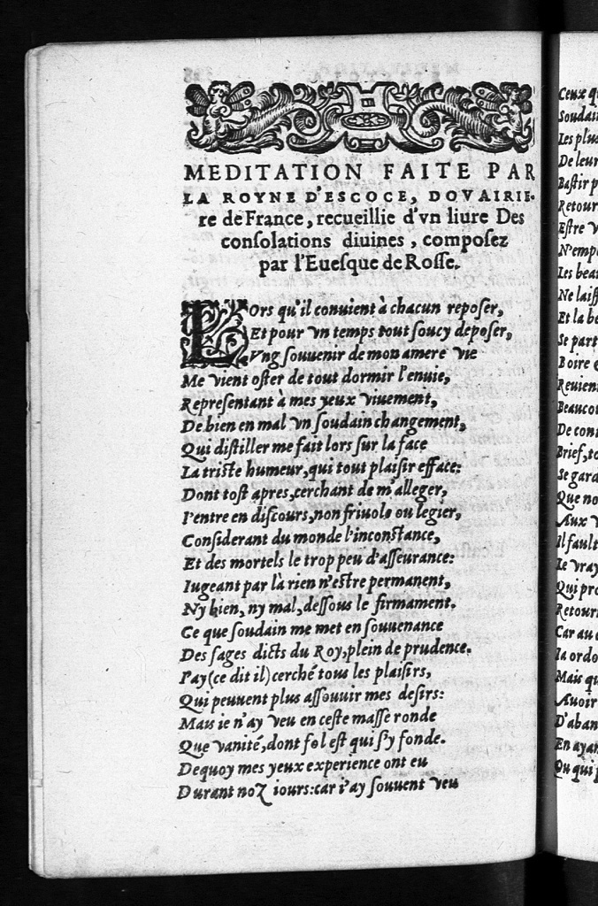

Select versions to display:
French Image
French Transcription
French Translation
Latin Image
Latin Transcription
| French Images | French Transcription | French Translation | Latin Images | Latin Transcription |
|---|---|---|---|---|
|  |
Page 38v MEDITATION FAITE PAR la Royne D’Escoce, dovairie re de France, recueillie d’vn liure Des consolations diuines, composez par l’Euesque de Rosse. Lors qu’il conuient à chacun reposer, Et pour vn temps tout soucy deposer, Ung souuenir de mon amere vie Me vient oster de tout dormir l’enuie, Representant à mes yeux viuement, De bien en mal vn soudain changement, Que distiller me fait lors sur la face La triste humeur, qui tout plaisir efface: Dont tost apres, cerchant de m’alleger, I’entre en discours, non friuole ou legier, Considerant du monde l’inconstance, Et des mortels le trop peu d’asseurance: Iugeant par là rein n’estre permanent, Ny bien, ny mal, dessous le firmament. Ce que soudain me met en souuenance Des sages dicts du Roy, plein de prudence. I’ay (ce dit il) cerché tous les plaisirs, Qui peuuent plus assouuir mes desirs: Mais ie n’ay veu en ceste masse ronde Que vanité, dont fol est qui s’y fonde. Dequoy mes yeux experience ont eu Durant noz iours: car i’ay souuent veu |
When it suits one to rest, And for a time all cares to put aside, A memory of my bitter life Comes to me to remove all desire to sleep, Depicting vividly to my eyes A sudden changing from wellbeing to depression That is distilled on my face as a gloomy disposition Which all pleasure obliterates: And so, soon after, looking to lighten my mood I enter into a discourse, neither frivolous nor idle, Pondering the fickleness of the world, And the lack of confidence in humankind: Considering that nothing is permanent, Neither goodness nor evil, under the firmament. This suddenly puts me in mind of The wise sayings of the King who is most prudent. 'I have' (he says) 'searched for all the pleasures That can most satisfy my desires: But I have seen in this vast globe Only vanity, which has folly at its centre. Which is what my eyes over time Have witnessed: for I have often seen |
Page 40v
EADEM MEDITATIO Latinè. Nocte colunt alij pacem, lenique diurnas Demulcent somno curas, mihi nocte recursam Fortunæ, rerúmque vices, & tristis imago Mutati subito fati suspensa fatigat Pectora, nec placidam membris dat cura quietem. Tùm madet irriguo lachrymarum flumine vultum Gaudia discedunt animo, grauiórque laborum Cura leuandorum sensim pracordia tangit. Occurrit menti rerum inconstantia, ludus Fortunæ varia mortales sorte rotantis. Nil stabile aut fixum conuexi cardine cœli Clauditur, occulto fatorum numine constant Nec bona, nec mala, perpetuo subeuntia cursis. Hîc mihi digna sopho sententia, dignáque Rege Ægram solatur mentem. Nil, inquit, in orbe Humanos mulcêre potest dulcedine sensus. Nil pulchrũ ac volupte est, quod nõ expertus amico Indulsi genio. Tandem vanissima sensi Omnia, quæ medio librata columine cœlum Continet, ac placidis mortalia pectora ludunt Deliciis. Vana hæc sunt omnia, nec nisi blanda Spe stultos capiunt. Ipsa hoc experta fidelis Testis ero, nostris superant exempla diebus. Vidi |
|
|
Page 39r Ceux qui touchoient les haults cieux de la teste, Soudainement renuersez par tempeste. Les plus grands Roys, Monarques, Empereurs, De leurs estats & vies ne sont seurs. Bastir palais, & amasser cheuance, Retourne en brief en perte & decadence. Estre venu des parens geneureux, N’empesche point qu’on ne soit malheureux. Les beaux habits, le ieu, le ris, la danse, Ne laissent d’eux que dueil & repentance. Et la beauté, tant agreable aux yeux, Se part de nous, quand nous deuenons vieux. Boire & manger, & viure tout à l’aise, Reuient aussi à douleur & malaise. Beaucoup d’amis, richesse, ny sçauoir, De contenter, qui les a, n’ont pouuoir. Brief, tout le bien de ceste vie humaine Se garde peu, & s’acquiert à grand’ peine. Que nous sert donc icy nous amuser Aux vanitez, qui ne font qu’abuser? Il fault cercher en bien plus haulte place Le vray repos, le plaisir, & la grace, Qui promise est à ceux, qui de bon cœur Retourneront à l’vnique Sauueur: Car au ciel est nostre aternal partage, Ia ordonné pour nous en heritage. Mais qui pourra , ô pere tres humain, Auoir cest heur, si t u n’y mets la main, D’abandonner son peché & offense, En ayant fait condigne penitence? Ou qui pourra ce monde depriser, |
Those who reached the heights of the mind Suddenly overturned by a storm. The greatest kings, monarchs, emperors, Of their estates and lives, they are not the masters. Building palaces and amassing wealth Soon results in loss and decay. Being descended from openhearted parents Does not prevent misery. Of beautiful clothes, games, laughter, dancing, Only shrouds and repentance are left. And beauty, so agreeable to the eye, Slips from us as we grow old. Drinking and eating, and comfortable living Result also in sorrow and anxiety. Many friends, riches or erudition, Those who have these are not capable of being satisfied. In brief, all the good things in this life Offer little protection and are purchased at great cost. What benefit is it then to divert ourselves With vanities, which are only harmful for us? It is necessary to search much more exalted places For true rest, delight and grace, Which is promised to those who, in good faith Will return to the incomparable Saviour: For heaven is our eternal share, Promised to us as our inheritance. But who will be able, O most compassionate Father, To have this opportunity, if one does not take action To abandon sinfulness and offence, Having made a sincere penance? Or who will be able this world to despise |
Page 41r Vidi ego sublimi ferientes sidera multos Vertice, qui subita quasi tempestate relapsi Deciderint. Ipsis non regibus atque monarchis, Telluris dominis, sortis datur esse, suæq[uae?] Securos vitæ. Speciosa palatia gemmis, Auro, adamante, ruunt momento: structáque celsis Aggeribus longo sudore, pecunia longo Possessore caret: nec stemmata clara beatum Efficiunt. Pictæ vestes , ostróque recoctæ, Festa, ioci, choreæ, ludi postrema dolorum Conciliant. Oculis formæ tàm grata venustas Mox ætate perit: lautis benè viuere mensis, Summi causa mali est: nec magno parta labore Rerum cognitio prodest: nec opes, nec amici Sorte sua dominum contentum reddere possunt. Nulla manet vitæ nobis diuturna voluptas, Tempore quantumuis longo, cupidéque petita. Quorsum igitur falsa nosmet spe ludimus, atque Sectamur vanis fallacia gaudia terris? Non hîc vera quies, non pax, non otia: cœlo Gaudia certabonis: sedes ibi fata quietas Constituêre piis hterno fœdere, quando Exosi scelus, ac impuræ crimina vitæ, Concipiunt Diuos animo, & cœlestia curant. Sed quis terrenæ linquet contagia vitæ, Quis lachrymarum vndis scelus eluet amati Deseret illecebr as mundi, iussúmque sequetur Numinis, & genio vitam moderabitur æquo? Non opis hoc nostræ, non hæc vis addita lime Iapetionidę, tua ni clementia nostris F |
||
|
Page 39v Pour seul t’aimer, honorer & priser? Nul pour certain, si ta douce clemence Le preuenant, à tel bien ne l’auance, Parquoy, Seigneur, et Pere souuerain, Regarde moy de visage serain, Dont regardas la femme pecheresse, Qui à tes pieds pleuroit ses maux sans cesse; Dont regardas Pierre pareillement, Qui ja t’auoit nié par iurement: Et comme à eux, donne moy ceste grace, Que ta mercy tous mes pechez efface. En retirant de ce monde mon cœur, Fay l’aspirer à l’eternel bon heur. Donne, Seigneur, donne moy patience, Amour, & foy, & et en toy esperance, L’humilité, auec deuotion De te servir de pure affection. Enuoye moy ta diuine prudence, Pour empescher que peché ne m’offence. Iamais de moy n’eslongne verité, Simple douceur, auecques charité. La chasteté, & la perseuerance demeure en moy, auec obeissance. De tous erreurs, Seigneur, preserue moy, Et tous les iours , Christ augmente la foy Que i’ay receu de ma mere l’Eglise, Où i’ay recours pour mon lieu de franchise, Contre peché, ignorance, & orgueil, Qui font aller au perdurable dueil. Permets, Seigneur, que tousiours mon bon Ange Soit pres de moy, & t’offre ma loüange, |
In order to love, honour and esteem you alone? No one, certainly, if heedful of your sweet clemency, Will not accept such a bounty, Whereby, Lord and kingly Father, Look on me with the serene face You regarded the sinful woman, Who ceaselessly at your feet cried out her wrongdoings; Similarly how you looked on Peter, Who, swearing, had denied you: And as you did to them, give me that grace, So that your mercy all my sins effaces. Make my heart, in withdrawing from this world, Yearn for eternal joy. Lord, give me patience, Love, and faith, and in your hope, Humility; with devotion To serve you out of pure love. Send me your divine discretion, To prevent sin from injuring me. Never from me remove your truth, Simple sweetness with charity. May chastity and perseverance With obedience live in me. From all error, Lord, protect me. And for ever, Lord, increase the faith That I have received from my mother, the Church, Which I use for my place of sanctuary, Against sin, ignorance and arrogance, Which lead to perpetual sorrow. Allow, Lord, my guardian angel always To be near me, and to offer you my praise, |
Page 41v Consiliis Pater occurrat, præátque monendo. Huc igitur, Pater, & læto me respce vultu, Quo spectata tibi est quondam muliercula, vitæ Delicias abolens pietate, piacula fletu. Respice me, Petri quo tu periuria vultu Spectasti, & fidei violatæ crimine mœstum, Iugentémque tuo firmasti numine. Nobis Gratia par adsit, par nos clementia seruet, Par bonitas nostræ perimat mal a nomina vitæ. Mundanis animos curis abducito nostros, Spectemus tantùm cœlestia. Da mihi fortem Rebus in afflictis animum: da relligione, Spe, piet ate humilem tibi me demittere: firmæ Da seruire fide. Tua me sapientia vitæ Seruet inoffensam maculis. Mihi conscia veri Simplicitas, animi candor, mihi dulcis in omnes Adsit amor. Casta mihi da persistere mente: Flagitij purum casto tibi corpus amore Seruiat: obsequij faciliis subeat iuga ceruix. Curam age, ne vitæ rapiat me deuius error, Imbuat ac falso peruersam dogmate mentem. Relligionis opes auge, cœtúmque piorum: Ac tueare fidem, qua nos Ecclesia natos Excepit: tutum nobis hoc semper asylum, Ne tumidæ fastu mentes, ne pectora veri Nescia, nos Erebi iungant pallentibus vmbris. Adsistat dexter genius mihi: carmina laudum, vota tibi, lachrymasque meas, suspiria tradat, Commendetque throno superùm: diuinaque mecum Pneumatos aura tui spiret, dum munere lucis |
||
|
Page 40r Mes oraisons, mes larmes, & souspirs, Et de mon cœur tous iustes desirs. Ton sainct Esprit sur moy face demeure, Tant que voudras qu’en ce monde ie dure. Et quand, Seigneur, ta clemence & bonté M’oster voudra de la captiuité, Où mon esprit reside en ceste vie, Pleine de maux, de tourmens, & d’enuie, Me souuenir donne moy le pouuoir De tes merces, & fiance y avoir, Ayant au cœur ta passion escrite, Que i’offriray au lieu de mon merite. Donques, mon Dieu, ne m’abandonne point, Et mesmement en cest extreme poinct, A celle fin que tes voyes ie tienne, Et que vers toy à la fin ie paruienne. SA VERTU M'ATTIRE, MARIE STVVARTE.
SONET L’ire de Dieu par le sang ne s’appaise De boeufs, ny boucs, espandu sur l’autel, Ny par encens, ou Sacrifice tel, Le Souuerain ne reçoit aucun aise. Qui veult, Seigneur, faire œuure qui te plaise, Il faut qu’il ayt sa foy en l’Immortel, Auec espoir, charité au mortel, Et bien faisant que ton loz il ne taise. L’oblation, qui t’est seule agreable, C’est vn esprit en oraison constant, Humble & deuot, en vn corps chaste estant. |
My prayers, my tears, and sighs, And from my heart all virtuous desires. May your Holy Spirit reside in me, So that in this world I endure. And when, Lord, your mercy and goodness Will draw me from the captivity Where my spirit inhabits this world Full of evils, torments and envy, Give me the power (means) to remember Your clemency, and to be betrothed there, Having in my heart your love inscribed Which I will offerin the place of my merit. Therefore, my God, do not abandon me, And even in this extreme moment, You see I am holding my course And that eventually I will be with you. Your virtue draws me. Mary Stuart SONNET The wrath of God is not appeased by the blood Of bulls, nor goats, splashed on the altar, Nor by incense, nor such sacrifice, Does the Sovereign receives any comfort. What matters, Lord, is to do what pleases you, One must have faith in the Everlasting, With hope, love for people, And doing good so that your law is not hidden. The only offering that is pleasing to you, Is a mind in constant prayer, Humble and devout, being in a chaste body. |
Page 42r Perfruar. At quando vinclis, & mole solutam Corporis, ætheream tua me reuocabit in aulam Maiestas, animum subeat clementia dudum Certa mihi, bonitásque malis tua cognita nostris. Illa fit vna mihi spes, præsidiúmque salutis, Mors tua, Christe, mei cordis penetralibus imis Scripta, vicem meriti præstet. Ne desere sontem Hanc animam: gressus recto mihi tramite firma, Vt teneam superas fatis vrgentibus auras.
Eadem Latine.
Non sanguis hirci, nón vituli, sacris Effusus aris, thuráve cœlites Possunt minaces mitigare. Fert animus placuisse Diuis? Mortale charum fac habeas genus: Æterna Diuûm numina spe cole, Fidéque: laude sempiterna Æthereas reuerere sedes. Non vlla cœlo gratior hostia Sancto recessu pectoris, & prece Constante rectum postulantis, Corporis integritate casti. His nostra, solus qui potes omnia, Munire sanctis pectora dotibus Diguêris, vt semper futuris Te sapiam, celebrèmque saclis. MARIA STEVARTA. VERITAS ARMATA. F |
||
|
Page 40v O Tout-puissant, sois moy si fauorable, Que pour tousiours ces graces dans mon cœur Puissant rester à ta gloire & honneur! VA, TV MERITERAS. |
O All-powerful, show such favour to me That forever these graces in my heart Powerfully remain, to your glory and honour. Go, you will deserve. |
|||
|
A L’EVESQUE DE ROSSE, APRÈS SA DÉLIVERANCE DE PRISON Puisque Dieu a, par son bonté imence, Permis qu’ayez obtins tant de bon heur, De despartir en crédit & faveur Hors de prison, en sayne conscience, Remerciez sa divine clémence, Qui de tous biens est seul cause & autheur, Et le priez d’un humble & dévot cœur, Qu’il ayt pitié de ma longue souffrance. |
{kind=link}
{kind=link}
{kind=link}
{kind=link}
{kind=link}
{kind=link}
{kind=link}
{kind=link}
{kind=link}